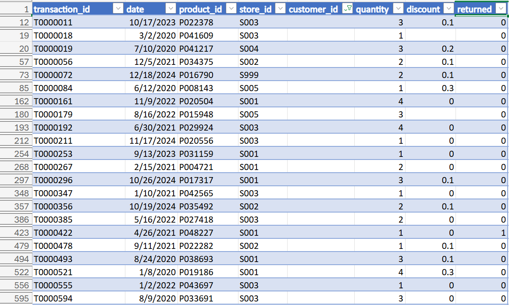
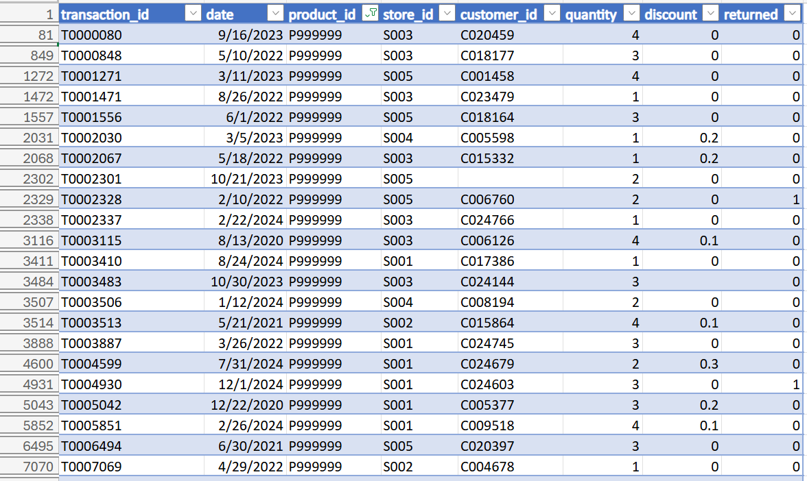
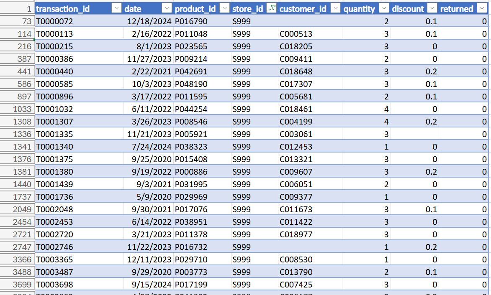

Project Overview
This project focuses on cleaning and validating an e-commerce sales dataset using Microsoft Excel.
The dataset contains approximately 50,000 sales records along with customer, product and store information.
Tools Used
Excel • XLOOKUP • Filters • Tables • PivotTables • Data Validation
Project Screenshots & Data Quality Report
The following screenshots document the data-quality checks performed on the e-commerce sales dataset. Each check was reviewed in Excel and the identified issues were documented for further investigation or validation.
1. Raw Sales Data

Data Overview
The original sales dataset contains approximately 50,000 transaction records. The dataset includes transaction, date, product, store, customer, quantity, discount and return information.
The raw data was reviewed before performing validation and cleaning checks.
Data Quality Report
The dataset was reviewed across key fields to identify duplicates, missing values, invalid references and inconsistent data. Issues requiring further investigation are documented below.
General Data Checks
- Transaction ID: No duplicate transaction IDs were identified.
- Date: No missing date values were identified.
- Quantity: Quantity values were within the observed range of 1–4.
- Returned: The returned field was reviewed as part of the data-quality assessment.
Problems Identified
The following issues were identified during the data-quality checks. Each issue was reviewed and documented rather than automatically deleting records.
1. Missing Customer IDs

Finding: 1,844 sales records were found with missing customer IDs.
Action: The records were retained and flagged for further investigation rather than deleted.
2. Missing Discount Values

Finding: 2,583 discount values were blank. The observed discount range was 0 to 0.3, with 29,907 records having a zero discount.
Action: Blank discount values were retained and flagged for further investigation instead of being replaced with an assumed value.
3. Unmatched Product ID

Finding: Product IDs were compared with the product master table using XLOOKUP. The check identified P99999 as an unmatched product ID.
Action: The record was retained and flagged for investigation rather than deleted.
4. Unmatched Store ID

Finding: Store IDs were compared with the store master table. The check identified S999 as an unmatched store ID.
Action: The record was retained and flagged for further investigation.
Data Quality Summary
The review identified four areas requiring attention: missing customer IDs, missing discount values, an unmatched product ID and an unmatched store ID.
Rather than removing potentially useful transactions, the identified records were retained and flagged. This preserves the original dataset while making data-quality issues clearly visible for further investigation.